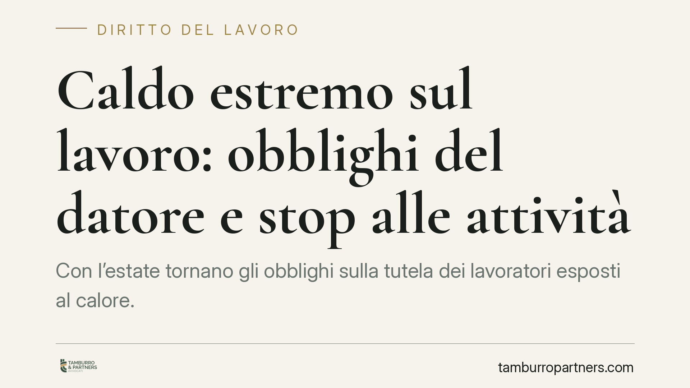

Caldo estremo sul lavoro: obblighi del datore e stop alle attività
Con l'estate tornano gli obblighi sulla tutela dei lavoratori esposti al calore. Tra ordinanze regionali di stop nelle ore più calde, aggiornamento del documento di valutazione dei rischi e possibili sanzioni penali, il datore di lavoro deve muoversi in anticipo. Vediamo cosa impone la normativa e come organizzarsi per non trovarsi scoperti in caso di controllo.

Il quadro: perché il caldo è un rischio da valutare
Il calore non è un imprevisto stagionale, ma un fattore di rischio prevedibile per la salute dei lavoratori, soprattutto nelle attività all'aperto (edilizia, agricoltura, logistica) o in ambienti con elevata esposizione termica.
Questo significa che il datore di lavoro non può considerarlo un'emergenza esterna a cui rispondere solo quando arriva l'ondata di calore: deve inserirlo tra i rischi da valutare e gestire con misure preventive.
Inquadramento normativo
Il riferimento centrale è l'art. 2087 del Codice civile, la cosiddetta "norma aperta": obbliga il datore ad adottare tutte le misure che, secondo la particolarità del lavoro, l'esperienza e la tecnica, sono necessarie a tutelare l'integrità fisica dei lavoratori. È "aperta" perché non elenca in modo tassativo cosa fare: impone di adeguare le misure all'evoluzione delle conoscenze e delle condizioni concrete. Il caldo estremo rientra pienamente in questo perimetro.
Sul piano prevenzionistico interviene il D.Lgs. 81/2008. L'art. 28 impone che il documento di valutazione dei rischi (DVR) consideri *tutti* i rischi per la sicurezza, compresi quelli legati alle condizioni microclimatiche e termiche. L'art. 19 definisce i compiti del preposto, che deve vigilare sull'osservanza delle misure. L'art. 55 prevede le sanzioni, anche penali, per l'omessa o inadeguata valutazione dei rischi.
A livello locale, diverse Regioni hanno adottato ordinanze che sospendono determinate lavorazioni nelle ore centrali della giornata durante i picchi di calore. Attenzione alla portata: queste ordinanze sono vincolanti nei limiti di ambito territoriale, di periodo e di tipologia di lavorazioni indicati nel provvedimento stesso. Vanno quindi lette caso per caso, verificando se l'attività dell'impresa vi rientri.
Utile anche far riferimento agli orientamenti dell'Ispettorato Nazionale del Lavoro in materia di stress termico, che richiamano l'uso di indicatori tecnici come l'indice WBGT (Wet Bulb Globe Temperature, che combina temperatura, umidità e irraggiamento) per stimare l'effettivo carico termico sul lavoratore.
Cosa cambia per chi organizza il lavoro
La giurisprudenza di legittimità ha da tempo affermato che la responsabilità del datore sorge quando il rischio era prevedibile e le misure adottate insufficienti. Il calore, oggi, è un rischio prevedibile: non basta reagire, occorre aver pianificato.
In sede ispettiva o giudiziaria l'onere della prova dell'adempimento ricade sul datore. Non è sufficiente sostenere di aver adottato precauzioni: bisogna dimostrarlo con documentazione (DVR aggiornato, protocollo caldo, registri, verbali di formazione). L'assenza di tracciabilità pesa quanto l'assenza della misura stessa.
In concreto, questo comporta la possibile rimodulazione degli orari, con spostamento delle lavorazioni più gravose nelle fasce meno calde, pause aggiuntive, fornitura di acqua e zone d'ombra, rotazione delle mansioni. Misure semplici, ma che devono risultare da un piano formalizzato.
Cosa fare in concreto
- Aggiornare il DVR inserendo il rischio calore, con riferimento a indicatori oggettivi come l'indice WBGT e non alla sola temperatura percepita.
- Predisporre un protocollo caldo: rimodulazione oraria, pause, idratazione, dispositivi, procedure di allerta e sospensione dell'attività.
- Verificare le ordinanze regionali applicabili, controllando ambito, periodo e lavorazioni interessate, e adeguare l'organizzazione di conseguenza.
- Formare e informare lavoratori e preposti sui sintomi da stress termico e sulle procedure di emergenza, conservando i relativi verbali.
- Documentare ogni misura adottata: senza tracciabilità, l'adempimento è difficile da dimostrare in caso di controllo o contenzioso.
È opportuno rivedere il DVR prima dell'avvio della stagione calda, non durante l'emergenza. Un documento aggiornato e un protocollo attuato in modo dimostrabile sono la migliore tutela, per i lavoratori e per l'impresa.
---
Contributo informativo a cura di Tamburro & Partners Avvocati - Avv. Giuseppe Tamburro. Non costituisce parere legale.
Ogni storia di lavoro ha i suoi tempi.
Se gestisci HR e vuoi un confronto su contenzioso, ispezioni o licenziamenti, scrivi allo studio. Ti rispondiamo entro un giorno lavorativo.